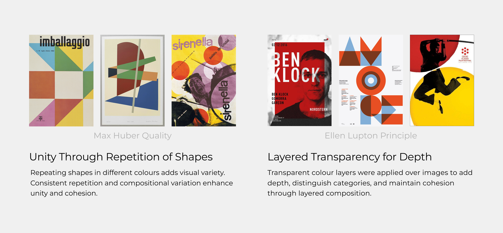
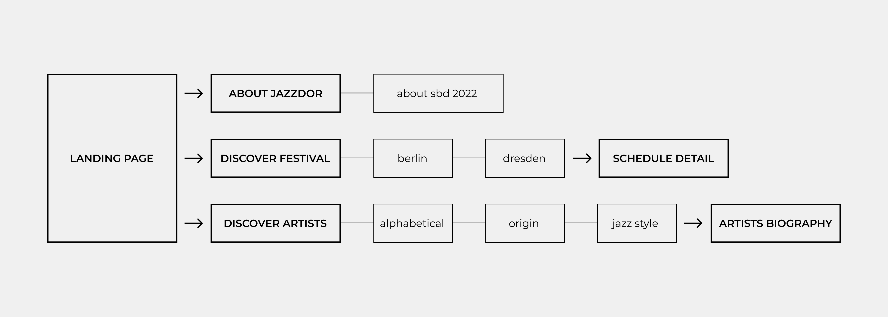
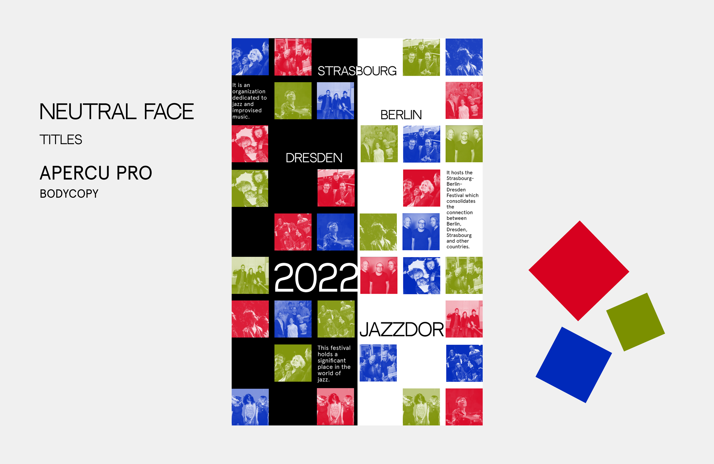

Project Overview
A microsite designed for transforming concepts and ideas into visual communication. Through art direction as well as graphic experimentation, design elements translate into engaging visual assets. The result was an interactive microsite that surfaces content and explores interactions for a cultural arts client.
The Client
Jazzdor is an organization dedicated to jazz as well as other improvised music. It hosts the Strasbourg-Berlin-Dresden Festival (2022) that holds a significant place in the world of jazz and contemporary music, a key platform for creative expression and musical innovation in Europe.
Problem Statement
How might we design a microsite that captures the energy and identity of the Jazzdor Festival while creating a clear and engaging experience for new and returning audiences?
Research Methodology
The research methodology followed a lateral exploration process, examining the Jazzdor Festival alongside the design influences of Max Huber and Ellen Lupton.

User Flow
The user flow maps out how visitors navigate through the Jazzdor microsite, from entry to discovery of artists, events and festival information.

User Navigation Flow
Design Interactions
Four key interactions define the Jazzdor microsite experience, each designed to reflect the rhythm and expressiveness of jazz.
Jazzdor Microsite Entry
Exploring Artists
Events Location and Date
All About Jazzdor
Design System
The microsite's concept revolves around information categorization and dynamic interactions facilitated by image cubes. Monochromatic colour scheme with a fusion of triadic colour adds variety and contrast to the microsite. The fundamental idea behind the microsite revolves around utilizing colours to guide users along distinct paths of information navigation.

Grid Based Typography, Monochromatic + Triadic Colour, Cubical Images
My Reflection
This was my first project focused on information architecture, and it was a challenge to learn how to structure and present content effectively. It made me think about how users navigate and understand information.
The project also helped me see how visual design and interaction can work together to express a strong cultural identity, and it introduced me to art direction and experimentation for the first time.